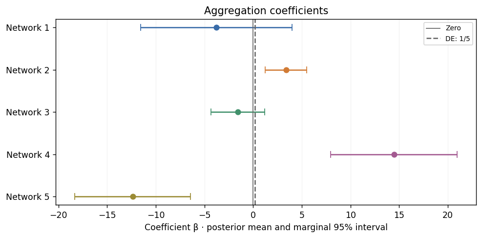
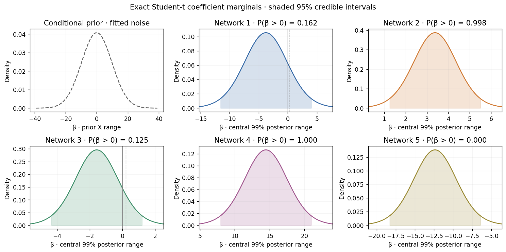
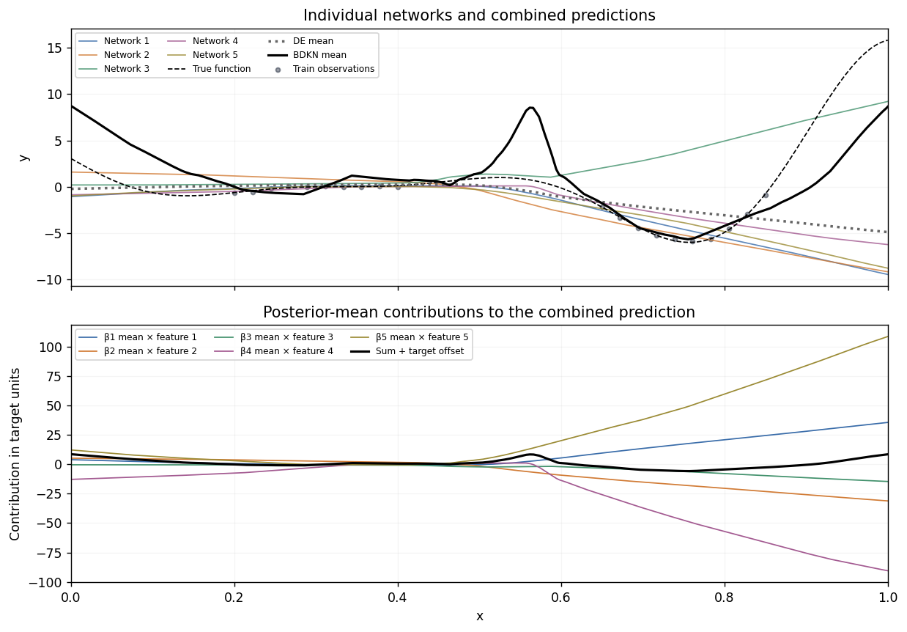
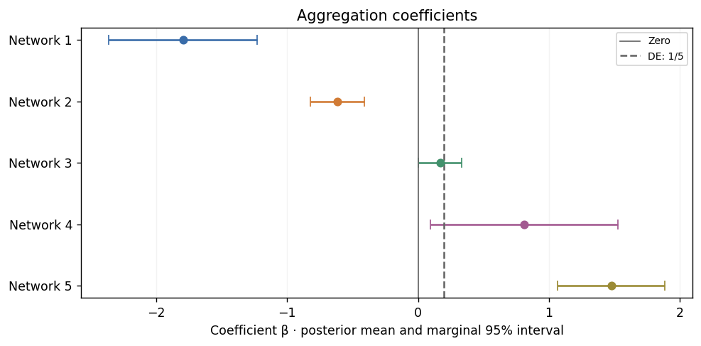
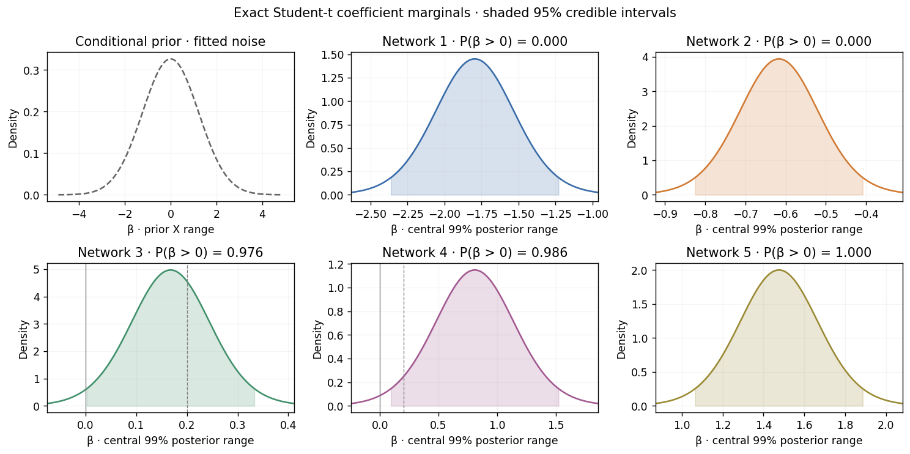
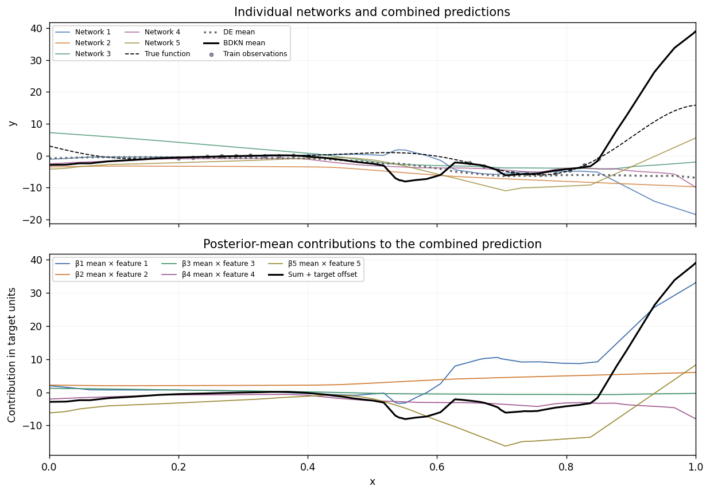
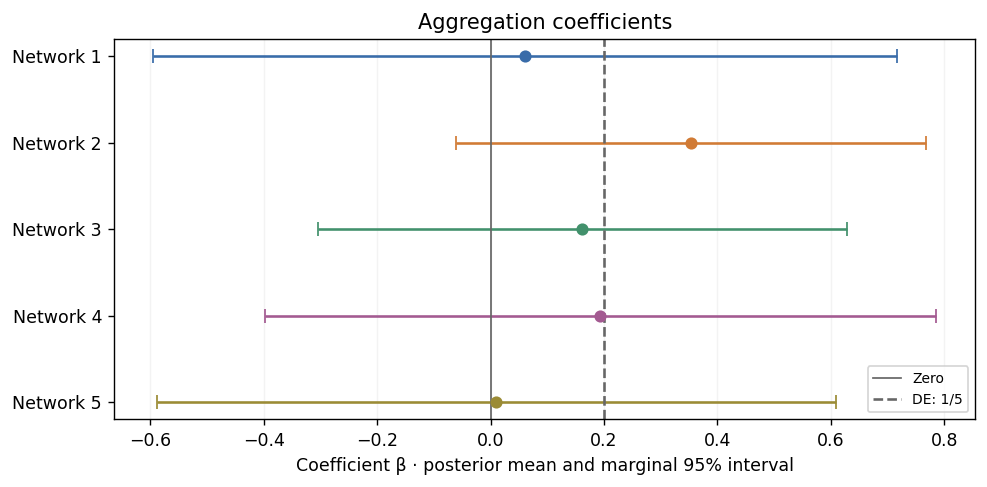
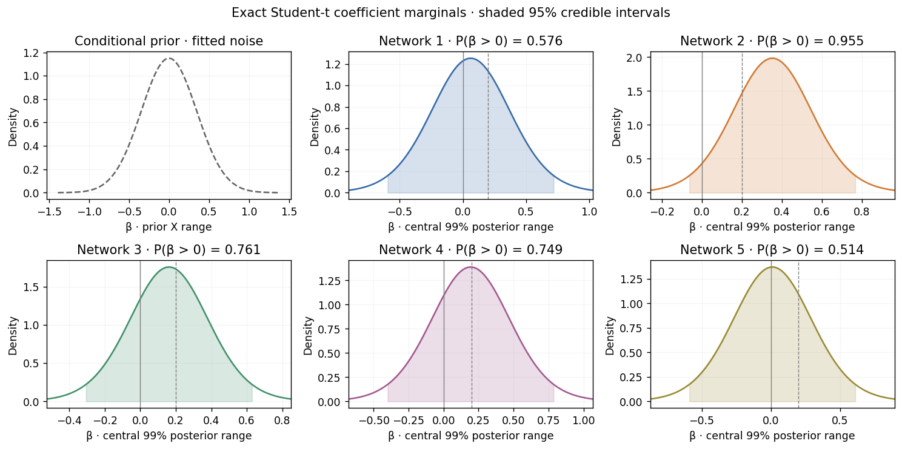
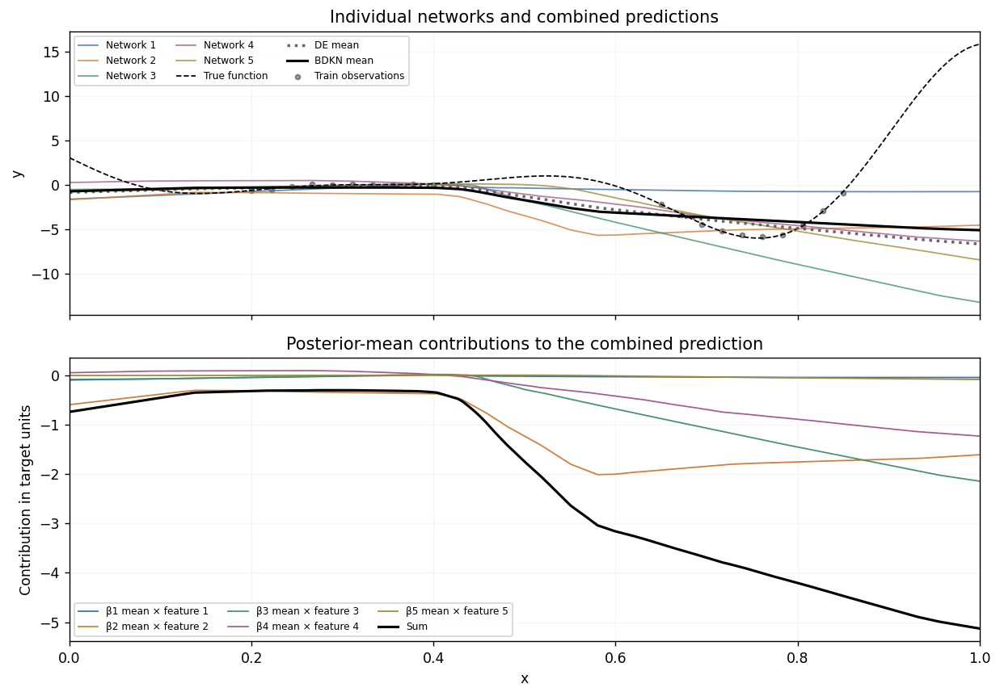

Regression comparison
Download resultsAggregation weights
Coefficients can be negative and need not sum to one. Intervals describe coefficient uncertainty; the dashed reference is DE’s fixed 1/H weight.
BDKN


Each density panel uses its own X range for readability; coefficient intervals above share a common axis. Prior reference conditions on fitted noise. Contribution shares use held-out inputs; test targets are used only for scoring.
| Network | β mean | 95% low | 95% high | P(β > 0) | Contribution share | Test RMSE | Test NLL |
|---|---|---|---|---|---|---|---|
| 1 | 1.98413 | -0.82135 | 4.78960 | 0.92214 | 0.09316 | 6.33172 | 2.61443 |
| 2 | -0.26203 | -0.97466 | 0.45060 | 0.22602 | 0.01751 | 6.96269 | 2.85838 |
| 3 | 1.88150 | -0.10312 | 3.86612 | 0.96904 | 0.12621 | 7.48989 | 9.28923 |
| 4 | -3.85127 | -5.63150 | -2.07105 | 0.00011 | 0.47302 | 10.59381 | 16.06180 |
| 5 | 6.14967 | 4.75819 | 7.54115 | 1.00000 | 0.29011 | 5.92139 | 22.68824 |
Functional repulsion · BDKN



Each density panel uses its own X range for readability; coefficient intervals above share a common axis. Prior reference conditions on fitted noise. Contribution shares use held-out inputs; test targets are used only for scoring.
| Network | β mean | 95% low | 95% high | P(β > 0) | Contribution share | Test RMSE | Test NLL |
|---|---|---|---|---|---|---|---|
| 1 | -3.77268 | -11.56802 | 4.02265 | 0.16239 | 0.12086 | 7.00500 | 8.70575 |
| 2 | 3.37667 | 1.25253 | 5.50082 | 0.99828 | 0.13407 | 7.06404 | 2.81376 |
| 3 | -1.57611 | -4.35376 | 1.20155 | 0.12522 | 0.04829 | 4.43452 | 2.35154 |
| 4 | 14.46576 | 7.96361 | 20.96790 | 0.99992 | 0.33306 | 6.03535 | 25.86590 |
| 5 | -12.36957 | -18.30388 | -6.43527 | 0.00016 | 0.36371 | 6.76290 | 4.16722 |
Weight repulsion · BDKN



Each density panel uses its own X range for readability; coefficient intervals above share a common axis. Prior reference conditions on fitted noise. Contribution shares use held-out inputs; test targets are used only for scoring.
| Network | β mean | 95% low | 95% high | P(β > 0) | Contribution share | Test RMSE | Test NLL |
|---|---|---|---|---|---|---|---|
| 1 | -1.79526 | -2.36156 | -1.22897 | 0.00000 | 0.33026 | 9.01058 | 2.56479 |
| 2 | -0.61650 | -0.82502 | -0.40798 | 0.00000 | 0.18137 | 8.16487 | 3.22809 |
| 3 | 0.16771 | 0.00243 | 0.33299 | 0.97649 | 0.03004 | 5.84432 | 12.27349 |
| 4 | 0.80904 | 0.09365 | 1.52443 | 0.98570 | 0.12852 | 6.32661 | 3.55569 |
| 5 | 1.47562 | 1.06493 | 1.88631 | 1.00000 | 0.32982 | 5.26532 | 2.79341 |
First-order repulsion · BDKN



Each density panel uses its own X range for readability; coefficient intervals above share a common axis. Prior reference conditions on fitted noise. Contribution shares use held-out inputs; test targets are used only for scoring.
| Network | β mean | 95% low | 95% high | P(β > 0) | Contribution share | Test RMSE | Test NLL |
|---|---|---|---|---|---|---|---|
| 1 | 0.06123 | -0.59432 | 0.71678 | 0.57626 | 0.01776 | 4.64441 | 18.26969 |
| 2 | 0.35298 | -0.06162 | 0.76758 | 0.95452 | 0.48640 | 6.11293 | 51.18780 |
| 3 | 0.16187 | -0.30504 | 0.62879 | 0.76103 | 0.29557 | 8.69085 | 2.32261 |
| 4 | 0.19371 | -0.39840 | 0.78582 | 0.74860 | 0.18952 | 6.16065 | 3.88086 |
| 5 | 0.01047 | -0.58857 | 0.60950 | 0.51436 | 0.01075 | 6.70609 | 12.02295 |